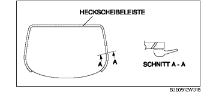
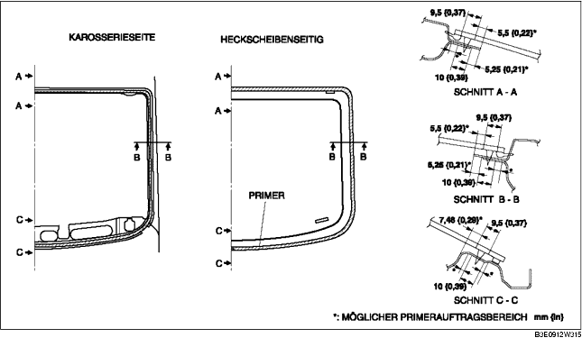
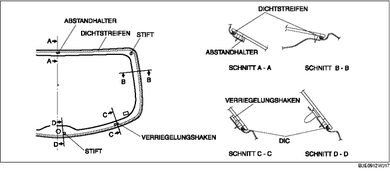
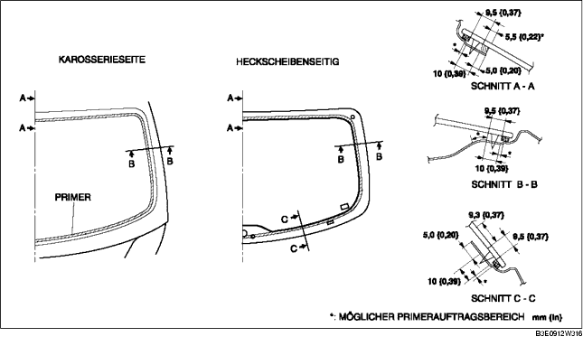

HECKSCHEIBE EINBAUEN
B3E091263931W02
4SD
-
Achtung
-
• Ein korrekter Einbau der Heckscheibe kann schwierig sein, wenn die Dichtung gebrochen ist oder die Scheibe beim Öffnen/Schließen einer Tür (alle Fenster geschlossen) durch den Luftdruck herausgedrückt wird. Alle Fenster offen lassen, bis die Heckscheibe vollständig eingebaut ist.
1. Das Dichtmittel mit einer Rasierklinge so abschneiden, dass am Rand 1 - 2 mm {0,04 - 0,07 in} stehenbleiben.
-
Vorsicht
-
• Die Handhabung einer Rasierklinge mit bloßen Händen kann Verletzungen verursachen. Bei der Benutzung einer Rasierklinge stets Schutzhandschuhe tragen.
2. Falls das Dichtmittel an einer Stelle ganz entfernt wurde, diese Stelle entfetten, etwas Primer auftragen und ca. 30 Minuten trocknen lassen. Dann eine 2 mm {0,08 in} starke Dichtmittelbahn auftragen.
3. Den Scheibenrand ca. 50 mm {1,97 in} breit und den Klebebereich der Karosserie reinigen und entfetten.
4. Bei erneuter Verwendung einer Heckscheibe die Zierleiste entsprechend der folgenden Vorgehensweise einbauen.
-
(1) Den Einbaubereich der Heckscheibenzierleiste an der Heckscheibe reinigen und entfetten.
-
(2) Glas-Primer auf den Einbaubereich der Heckscheibenzierleiste an der Heckscheibe auftragen.

5. Glas-Primer auf die Heckscheibe und Karosserie-Primer auf die Heckscheibenzierleiste wie in der Abbildung gezeigt auftragen. Den Primer ca. 30 Minuten trocknen lassen.
-
Achtung
-
• Den Bereich schmutz- und fettfrei halten und die Oberfläche nicht berühren. Anderenfalls bleibt der Primer eventuell nicht richtig am Glas oder der Karosserie haften und führt zu Lecks.

6. Dichtmittel wie abgebildet auf das Glas auftragen.
7. Die Positionierungsstifte in die Karosserie einsetzen. Dann die Heckscheibe einbauen.
8. Die Heckscheibenstifte andrücken, um die Klauen in die Karosserie einzurasten.
9. Die Scheibe am Rand entlang andrücken, so dass das Maß des Spalts der Zierleistenlippe im Sollbereich liegt.
10. Den Steckverbinder des Heizdrahtes anschließen.
11. Folgende Bauteile einbauen:
-
(1) Hintere Gepäckraumverkleidung (Siehe HINTERE GEPÄCKRAUMVERKLEIDUNG AUSBAUEN/EINBAUEN.)
-
(2) C-Säulenverkleidung (Siehe C-SÄULENVERKLEIDUNG AUSBAUEN/EINBAUEN.)
-
(3) Radkastenverkleidung (Siehe RADKASTENVERKLEIDUNG AUSBAUEN/EINBAUEN.)
-
(4) Hintere Schwellerleiste (Siehe HINTERE SCHWELLERLEISTE AUSBAUEN/EINBAUEN.)
-
(5) Rücksitz (Siehe RÜCKSITZ AUSBAUEN/EINBAUEN.)
12. Das Dichtmittel vollständig aushärten lassen.
-
Härtezeit des Dichtmittels: 24 Stunden
13. Seifenwasser auf die Zierleistenseite der Heckscheibe auftragen und von innen einen Luftstrom auf die Stelle richten. Dann prüfen, ob Blasen oder Luftlecks entstehen.
-
• Bei Blasen oder Luftlecks den beschädigten Teil der Dichtung reparieren und erneut prüfen.
5HB
-
Achtung
-
• Ein korrekter Einbau der Heckscheibe kann schwierig sein, wenn die Dichtung gebrochen ist oder die Scheibe beim Öffnen/Schließen einer Tür (alle Fenster geschlossen) durch den Luftdruck herausgedrückt wird. Alle Fenster offen lassen, bis die Heckscheibe vollständig eingebaut ist.
1. Das Dichtmittel mit einer Rasierklinge so abschneiden, dass am Rand 1 - 2 mm {0,04 - 0,07 in} stehenbleiben.
-
Vorsicht
-
• Die Handhabung einer Rasierklinge mit bloßen Händen kann Verletzungen verursachen. Bei der Benutzung einer Rasierklinge stets Schutzhandschuhe tragen.
2. Falls das Dichtmittel an einer Stelle ganz entfernt wurde, diese Stelle entfetten, etwas Primer auftragen und ca. 30 Minuten trocknen lassen. Dann eine 2 mm {0,08 in} starke Dichtmittelbahn auftragen.
3. Den Scheibenrand ca. 50 mm {1,97 in} breit und den Klebebereich der Karosserie reinigen und entfetten.
4. Den Dichtstreifen entlang dem Scheibenrand einsetzen.

5. Die Halter und Abstandhalter wie in der Abbildung gezeigt befestigen.
6. Die Stifte an den während des Ausbaus angebrachten Markierungen einsetzen.
7. Glas-Primer auf die Heckscheibe und Karosserie-Primer auf die Heckscheibenzierleiste wie in der Abbildung gezeigt auftragen. Den Primer ca. 30 Minuten trocknen lassen.
-
Achtung
-
• Den Bereich schmutz- und fettfrei halten und die Oberfläche nicht berühren. Anderenfalls bleibt der Primer eventuell nicht richtig am Glas oder der Karosserie haften und führt zu Lecks.

8. Dichtmittel wie abgebildet auf das Glas auftragen.
9. Die Positionierungsstifte in die Karosserie einsetzen. Dann die Heckscheibe einbauen.
10. Die Heckscheibenstifte andrücken, um die Klauen in die Karosserie einzurasten.
11. Den gesamten Rand der Scheibe andrücken.
12. Den Steckverbinder des Heizdrahtes anschließen.
13. Folgende Bauteile einbauen:
-
(1) Heckspoiler (Siehe HECKSPOILER AUSBAUEN/EINBAUEN.)
-
(2) Heckscheibenwischermotor (Siehe HECKSCHEIBENWISCHERMOTOR AUSBAUEN/EINBAUEN.)
-
(3) Heckscheibenwischerarm und -wischerblatt (Siehe WINDSCHUTZSCHEIBENWISCHERARM UND -WISCHERBLATT AUSBAUEN/EINBAUEN.)
-
(4) Zusatzbremsleuchte (Siehe ZUSATZBREMSLEUCHTE AUSBAUEN/EINBAUEN.)
-
(5) Untere Heckklappenverkleidung (Siehe UNTERE HECKKLAPPENVERKLEIDUNG AUSBAUEN/EINBAUEN.)
-
(6) Seitliche Heckklappenverkleidung (Siehe SEITLICHE HECKKLAPPENVERKLEIDUNG AUSBAUEN/EINBAUEN.)
-
(7) Obere Heckklappenverkleidung (Siehe OBERE HECKKLAPPENVERKLEIDUNG AUSBAUEN/EINBAUEN.)
14. Das Dichtmittel vollständig aushärten lassen.
-
Härtezeit des Dichtmittels: 24 Stunden
15. Seifenwasser auf die Zierleistenseite der Heckscheibe auftragen und von innen einen Luftstrom auf die Stelle richten. Dann prüfen, ob Blasen oder Luftlecks entstehen.
-
• Bei Blasen oder Luftlecks den beschädigten Teil der Dichtung reparieren und erneut prüfen.